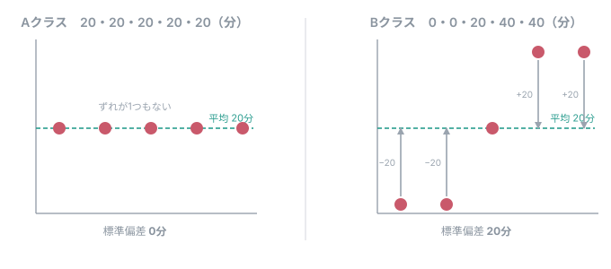
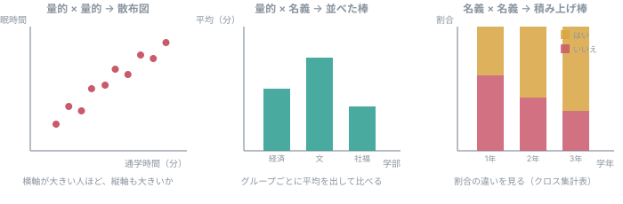

第4回 資料：代表値とばらつき、そして設問の組み合わせ¶
問い：自分の調査票から、平均・ばらつき・分布は出せるか。
1. 代表値を3つ¶
通学時間を5人に聞いて、10分・20分・20分・30分・120分だったとする。
| 名前 | 何を表すか | この例では |
|---|---|---|
| 平均 | 全部を足して人数で割る | 40分 |
| 中央値 | 小さい順に並べたときの、まん中 | 20分 |
| 最頻値 | いちばん多く出てきた値 | 20分 |
平均40分と言われても、5人のうち4人は30分以内である。 1人の120分が、平均を引き上げている。
平均が悪いのではない。平均は「全体をならすといくつか」を表す、ちゃんとした指標である。 ただし、それだけでは多くの人の状況を言い表せないことがある。
「小さい順に並べたときのまん中」を知りたいなら、中央値を見る。 「いちばんありがちな値」を知りたいなら、最頻値を見る。
だから、平均を出すときは分布（ヒストグラム）も一緒に見る。
最頻値は、いつでも使えるわけではない
上の例は 10・20・20・30・120 と、きりのいい値ばかりなので最頻値が出せた。
ところが、「あなたの睡眠時間は何時間ですか」と自由に書かせると、 6.5・7・7.2・6・8.5 … とほぼ全員が違う値になる。 このとき最頻値は「たまたま2人が同じだった値」でしかなく、意味をなさない。
最頻値が役に立つのは、出てくる値の種類が限られているときである。
- 選択肢で聞いたとき（名義・順序）── いちばん選ばれた選択肢が分かる
- 「何時間」と整数で答えさせたとき ── 同じ値が重なる
AIに「この設問から出せる集計は？」と聞くと、最頻値も挙げてくる。 AIはデータの種類しか見ていないので、実際にどんな値が集まるかまでは分からない。 そこを判断できるのは、設問を作った自分たちだけである。
2. ばらつき ── 標準偏差¶
平均が同じでも、中身は違う。
- Aクラス：20分・20分・20分・20分・20分 → 平均20分
- Bクラス：0分・0分・20分・40分・40分 → 平均20分
同じ平均なのに、ぜんぜん違う。この「散らばりぐあい」を1つの数にしたものが標準偏差である。

図の矢印が、一人ひとりの「平均からのずれ」である。これを偏差という。
- Aクラス：全員が平均の上にのっている。ずれが1つもないので、標準偏差は 0分
- Bクラス：0分の人が −20、40分の人が +20。ずれが大きいので、標準偏差は 20分
標準偏差は、こうやって1つの数にしている¶
- 一人ひとりの偏差（平均からのずれ）を出す
- 2乗する。そのままだと、＋のずれと−のずれが打ち消し合って 0 になってしまうため
- 2乗したものを平均する（正確には「データ数−1」で割る）。これが分散
- 分散の平方根をとると、元の単位（分）に戻る。これが標準偏差
式にすると、こうなる。
| 記号 | 意味 |
|---|---|
| \(x_1, x_2, \ldots, x_n\) | 一人ひとりの値（通学時間など） |
| \(\bar{x}\) | 平均 |
| \(n\) | データの数（人数） |
| \(x_i-\bar{x}\) | 偏差（上の図の矢印） |
上のBクラスで、実際に追ってみる。
| 1人目 | 2人目 | 3人目 | 4人目 | 5人目 | ||
|---|---|---|---|---|---|---|
| 値 | 0 | 0 | 20 | 40 | 40 | 平均 20 |
| 偏差 | −20 | −20 | 0 | +20 | +20 | 足すと 0（だから2乗する） |
| 偏差の2乗 | 400 | 400 | 0 | 400 | 400 | 合計 1600 |
手で計算する必要はない
第6回で df["通学時間分"].std() と書けば、この計算がそのまま出る
（std() も「データ数−1」で割る）。
大事なのは、「平均からどれくらい離れているのが普通か」を表した数だということである。
なぜ「データ数−1」で割るのか
いまは気にしなくてよい。手元の数人から、その外側の人たちのばらつきを見積もるときに、 データ数で割ると小さく出すぎることが知られている。その補正である。
「データ数で割る」流儀もあるが、この授業とPythonは「データ数−1」でそろえる。
- 標準偏差が小さい ＝ みんな平均の近くにいる（Aクラス）
- 標準偏差が大きい ＝ 平均から遠い人が多い（Bクラス）
標準偏差は、量的データ（何分・何円・何回）にしか出せない。 「所属学部」の標準偏差は意味がない。
計算はPythonがやる
手で計算する必要はない。第6回で df["通学時間分"].std() と書けば出る。
いま大事なのは、「何を表す数なのか」を知っていることである。
3. どの設問から、どれが出せるか¶
第3回で作った対応表に、この回の視点を足す。
| データの種類 | 平均 | 中央値 | 最頻値 | 標準偏差 | ヒストグラム |
|---|---|---|---|---|---|
| 名義（学部など） | ✗ | ✗ | ○ | ✗ | ✗（棒グラフ） |
| 順序（満足度1〜5） | △ | ○ | ○ | △ | ✗（棒グラフ） |
| 量的（何分・何円） | ○ | ○ | ○ | ○ | ○ |
△は「等間隔とみなせば出せる」という意味である（第3回で扱った）。 出すときは、各選択肢の人数も一緒に見せる。
ここで自分の調査票を見直す。
- 平均やヒストグラムを出したい設問が、選択肢で聞く形になっていないか
- 逆に、数値で聞いているが、実は分類でしかない設問はないか（例：1＝経済、2＝文）
4. 🔴 この回の山：設問を組み合わせる¶
第3回では、設問を1つずつ見て「この設問だけから何が出せるか」を書いた。 第4回では、「元の問いに答えるには、どの設問とどの設問を組み合わせるか」を決める。
これが「調査票の完成」の中身である。
組み合わせると、こう見える¶

どんな図になるのかを先に知っておくと、設問を選びやすい。 上の3つは、第7回・第9回で実際に作る。
組み合わせの型¶
| 組み合わせ | 集計 | グラフ | 授業のどこで |
|---|---|---|---|
| 量的 × 量的 | 相関係数 | 散布図 | 第9回 |
| 量的 × 名義 | グループごとの平均・中央値 | 並べた棒 | 第7・9回 |
| 名義 × 名義 | クロス集計表 | 積み上げ棒 | 第7回 |
| 順序 × 名義 | グループごとの分布 | 並べた棒 | 第7回 |
書き方の例¶
問いが「通学時間が長い学生ほど、授業前夜の睡眠時間が短いか」だとする。
問いに答えるため、通学時間（Q1）と睡眠時間（Q2）を組み合わせる。 横軸を通学時間、縦軸を睡眠時間にした散布図を作り、両方に答えた人数と相関係数を示す。 授業の開始時限によって違うかもしれないので、Q3（何限か）ごとの睡眠時間も見る。 ただし、この調査だけでは、通学時間を短くすれば睡眠時間が増えるという因果までは言えない。
ここまで書けて、はじめて「調査票が完成した」ことになる。
散布図を使うなら、量的な設問が2つ要る
第3回の条件は「量的データを最低1問」だった。 散布図で2つの関係を見るなら、量的な設問が2つ必要である。 いまの調査票で足りているか確かめること。
5. 統計量の名前を並べるだけにしない¶
対応表に「平均・中央値・標準偏差」と書けること自体は、採点の対象ではない。
見るのは、「何を知るために、その集計をするのか」である。
- すべての設問に平均を書く必要はない
- その設問の種類と、調査の目的に合った集計を選ぶ
課題4（5点）調査票の完成¶
提出は2つに分かれる。
グループで1件（代表者がMoodleに記入）¶
- [ ] 完成した調査票の、回答者用URL
- [ ] 設問の対応表（第3回のものを更新する）
- 設問番号・設問文・データの種類・その設問だけから出せる集計
- 🔴 問いに答えるための「設問の組み合わせ」と、使うグラフ（§4）
- [ ] 第3回から何を直したかの記録
- 直すところがなかった項目も、何を確かめて変更不要と判断したかを書く
調査票そのものの確認
- [ ] 設問文に単位と記入例がある（例：何分でしたか／90）
- [ ] 選択肢が全部書かれている。当てはまらない人の行き場がある
- [ ] いつのことを聞いているかがはっきりしている（例：直近7日間に）
- [ ] 自分で1件テスト回答して、最後まで答えられることを確かめた
- [ ] 匿名で集める設定になっていることを、テスト回答の結果で確かめた
各自で（グループの誰か1人では代えられない）¶
- [ ] 日本語のグラフが表示された画面のスクリーンショット
- [ ] renshu.csv を読み込めた画面のスクリーンショット
第6回からは各自のパソコンで動かすので、全員が確認する。 動かなかった人は、エラーの内容と、誰に相談したかを書いて出すこと。
配点の目安
| 見るところ | 点 |
|---|---|
| 調査票の完成（設問・選択肢・期間・単位・テスト回答） | 2 |
| 問いと分析計画が合っているか（設問の組み合わせ） | 2 |
| 各自の環境確認 | 1 |
環境が動かなかったこと自体では減点しない。相談した記録があればよい。